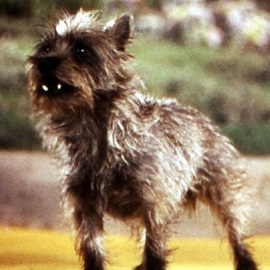
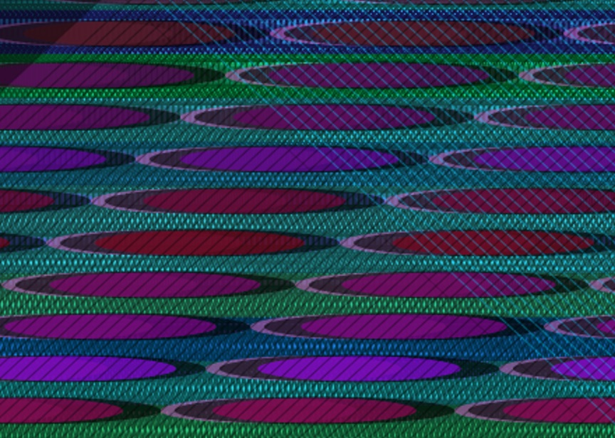
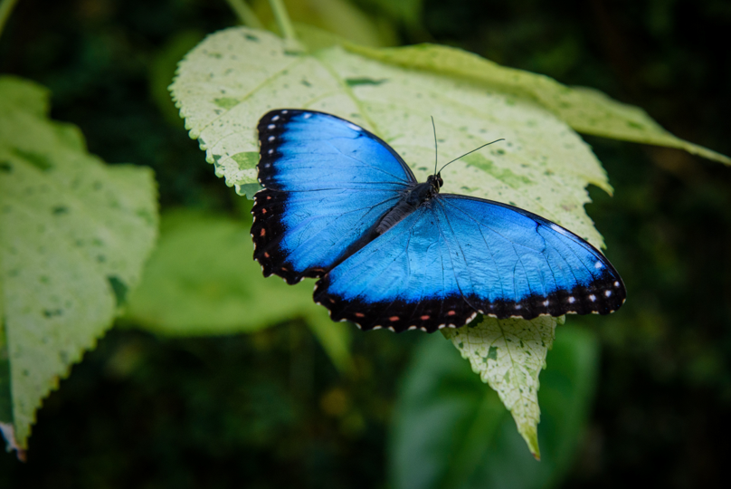
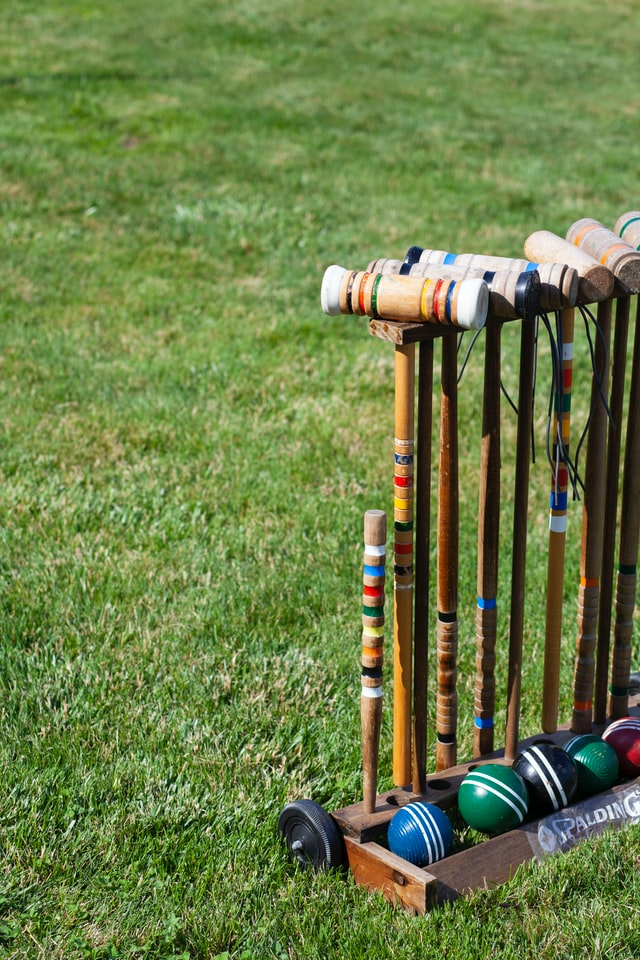
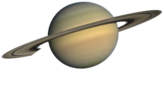

Projects
These are interactive, JavaScript programming excercises in responsiveness with the cursor, specifically using
the mouse and/or keyboard. So far, I've managed to venture into wide screen territory only. If you are on a
mobile device at the moment, I apologize. I'll focus on smaller screens in due time.
2021.001: KALEIDOSCOPE EYES

Throughout time we've asked ouselves: what came first, the chicken or the egg? There are
so many facets to that question. So much so, it's like a cultural diamond in the rough.
I've taken this age-old quandry and explored its imagery – but more specifically, how the golden ratio is
the driver with its mysterious, ever-present, Fibanacci-sequence engine incessantly asserting itself into
our lives.
Another shape similar in form is the human eye. Like chicken eggs, and along with its lids and lashes, the width is
about 1.6 times the height, on average. I don't think The Beatles had this in mind when they
wrote Lucy in the Sky with Diamonds but they did talk about
eyes...
2021.002: DRACAENA

Similar to slip-scan photography, JavaScript can transform images by taking a
column of pixels and reproduce them elsewhere. The effect is a smear of whatever color(s) happen to be hanging out in
that column.
I've used this technique to form a moving background to a collage with a dragon-like font, which I think is appropriate to
accompany images of draceana, aka the dragon tree.
Click any mouse button to see things a different way. There's a line to assist with your slip-scanning. The actual
image being scanned is partially hidden but it is the repeated image you see I kid you not.
2021.003: SOME OF OZ

This is an exploration of nonlinear, narrative, programming logic. It's like a game, sort of. You can type words or
small phrases depending on where you'd like to go.
Fans of The Wizard of Oz will enjoy this little trip to that familiar merry old land. As the title suggests, this is only some of the amazing
fable that captured my imagination as a kid. You won't see any munchkins or Auntie Em, for example, but you might
find yourself in the Witch's Castle. Oh my!
I spent a little extra time exploring different treatments of typography, going as far as using an array in rotation
inside a for loop to build a descending arc of text. Enjoy!
2021.004: RODRIGO VIZ

Joaquín Rodrigo (11/22/1901 – 7/6/1999) was a blind, spanish composer well-known for writing outstanding guitar music.
He also wrote an athletic flute concerto, Concierto Pastoral. It is one of the most difficult ever written for
the instrument. I chose a few bars of the energetic first movement for my first foray into audio visualization.
Just 10 seconds with some reverb to give it an ethereal air, these vivid colors and striking patterns were driven by technical acrobatics in the music.
This project is also a chance to show off my flute playing albeit many, many years ago. Betty Ann Diaz is also heard on piano.
Have a listen.
WARNING: This animation may potentially contain seizure triggers for those with photosensitive epilepsy.
Viewer discretion is advised.
2021.005: THE WORLD OF W (Under Construction)

I've always been fascinated with typography. Here, I've taken a simple letter and given it shapes solely supplied by
p5.js functions.
Again, this relies on mouse/keyboard interactivity and you need to do a
wee bit of work to see every letterform.
Photo by Michael Mrozek on Unsplash
2021.006: WICKET CREATURES

Here's some more animation while I explore object-oriented programming, the superformula, and the superellipse.
Yes, this did tax my brain!
Did you play the lawn game croquet as a kid? I did and boy, did I have fun. I dove into my memory banks
for this project and thought about my boyhood fascination with color (and Disney animation too). Afterall, that was my
favorite part of the game, hitting those striped balls with colorfully designed mallets.
Be forewarned though, it's wild;
this one's a doozy.
2021.007: WHERE HAVE I BEEN?

(In my best David Attenborough voice...) See where I've wandered across our vast continent. By clicking your
mouse, you'll see the expansion of migratory patterns throughout my lifetime, the places I've
visited or lived, accumulatively that is.
Using a database of over 29,000 USA cities for a backdrop, I am showing my spots in North America.
I've lived in & visited other hemispheres – just showing this one for an excercise
in data visualization.
Photo credit: Koyos,
Public domain, via Wikimedia Commons
2021.008: UNIREVERS

If you've gotten this far, you've manage to stumbled upon a strange place indeed. This is a
minimal game involving maximal belief in an odd reality that makes no sense to us, a
universe where planets devour stars for their survival.
Hopefully, you can maneuver well enough to survive awhile — you may even reach a new ability level
you never knew you had. It's time you found your inner conqueror...